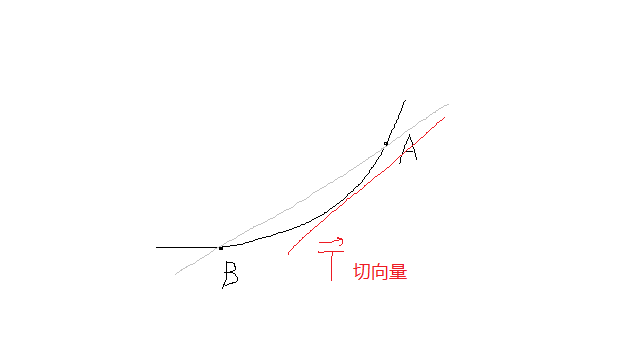

§8.6 多元函数微分学的几何应用
- 直线 s=(l,m,n)，经过 (x0,y0,z0)，方程为
lx−x0=my−y0=nz−z0
- 平面 n=(A,B,C)，经过 (x0,y0,z0)，方程为
A(x−x0)+B(y−y0)+C(z−z0)=0
- 空间曲面具有切平面和法线；空间曲线具有切线与法平面
- 法平面：与切线垂直，且过 (x0,y0,z0)
- 法向量：与平面垂直，且过 (x0,y0,z0)
一、空间曲线的切线和法平面

- 参数形式 ⎩⎨⎧x=φ(t)y=ψ(t)z=ω(t)t∈[α,β]
- T=t1→t0limS割(φ′(t0),ϕ′(t0),ω′(t0))
- 切线方程：φ′(t0)x−x0=ψ′(t0)y−y0=ω′(t0)z−z0
- 法平面：φ′(t0)(x−x0)+ψ′(t0)(y−y0)+ω′(t0)(z−z0)=0
- 一般形式 {F(x,y,z)=0G(x,y,z)=0（曲面→交线，F、G偏导连续且 FyGyFzGz=0）
- T=iFxGxjFyGykFzGz
- 切线方程：FyGyFzGzx−x0=−FxGxFzGzy−y0=FxGxFyGyz−z0
- 法平面：x−x0FxGxy−y0FyGyz−z0FzGz=0
- {y=φ(x)z=ψ(x)，T=(1,φ′(x),ψ′(x))∣x=x0
- {x=φ(y)z=ψ(y)，T=(dydφ,1,dydψ)∣y=y0
例题
-
求 {y=2xz=1−x 在 (2,2,−1) 处的切线方程
解：2T=(1,2x2,−1)∣x=2=2(1,21,−1)=(2,1,−2)
2x−2=1y−2=−2z+1
-
求 {x2+y2+z2=6x+y+z=0 在 P(1,1,−2) 处的切线和法平面
解：
α=(Fx,Fy,Fz)∣P=(2,2,−4)
β=(Gx,Gy,Gz)∣P=(1,1,1)
α×β=i21j21k−41=6i−6j
取 (1,−1,0)，切线方程为 ⎩⎨⎧1x−1=−1y−1z=−2
二、空间曲面的切平面和法线
- F(x,y,z)=0
- 法向量 n=(Fx,Fy,Fz)
- 切平面方程：Fx(x−x0)+Fy(y−y0)+Fz(z−z0)=0
- 法线方程：Fxx−x0=Fyy−y0=Fzz−z0
- z=f(x,y)→F(x,y,z)=f(x,y)−z=0
- 法向量 n=(fx,fy,−1)
- 切平面方程：fx(x−x0)+fy(y−y0)+(−1)(z−z0)=0
- z=f(x0,y0)+fx(x0,y0)(x−x0)+fy(x0,y0)(y−y0)（以直代曲）
例题
求 z=4−x2−y2 平行于平面 2x+2y+z−1=0 的切平面方程
解：n=(2,2,1)
设切点 (x0,y0,4−x02−y02)
n=(Fx,Fy,Fz)=(−2x,−2y,−1)∣P0=(−2x0,−2y0,−1)
2−2x0=2−2y0=1−1=k
x0=y0=1，z0=2
切平面 2(x−1)+2(y−1)+1⋅(z−2)=0
法线 2x−1=2y−1=1z−2